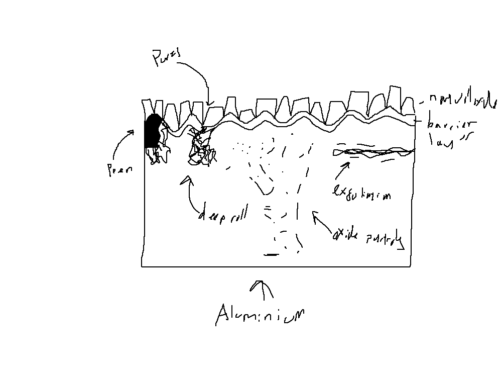
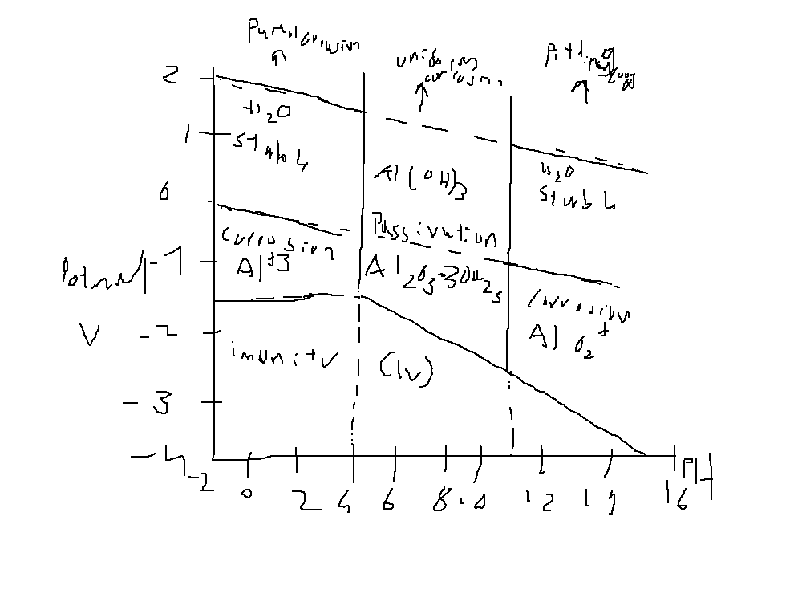
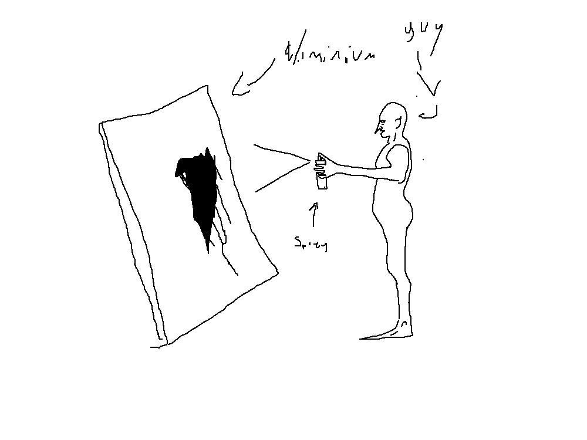
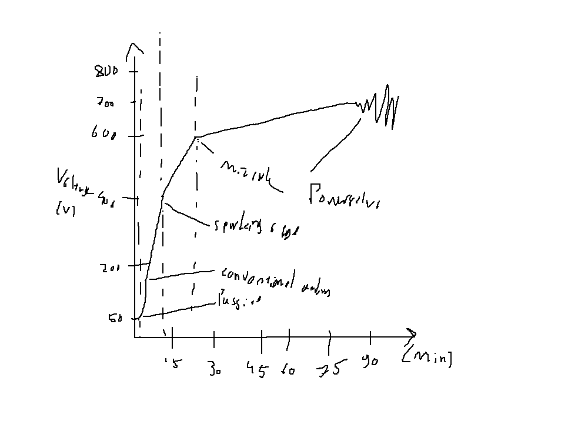
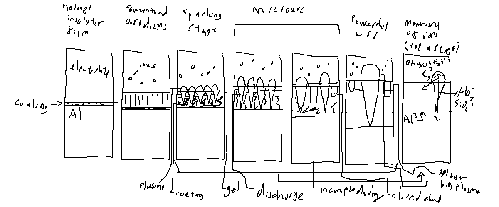
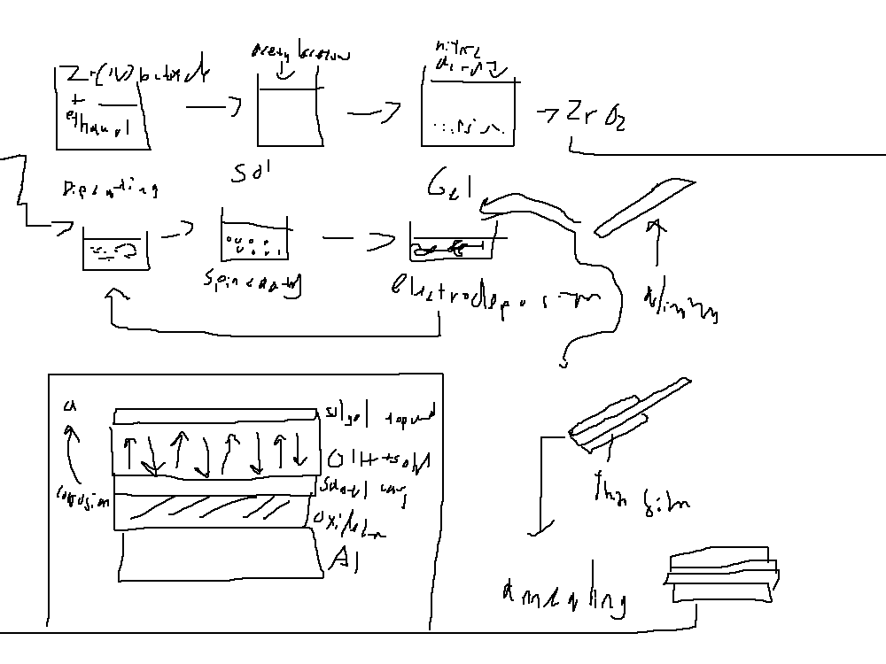

Aluminium is widely used in aerospace, automotive, marine, and construction industries due to its low density, high strength-to-weight ratio, and excellent thermal/electrical conductivity. However, aluminium is inherently reactive and readily forms a native oxide film (Al₂O₃) when exposed to air. This passive film provides moderate protection in neutral environments but is susceptible to breakdown in aggressive chloride-containing media, acidic or alkaline solutions, and under elevated temperatures. Corrosion of aluminium can lead to pitting, intergranular attack, stress corrosion cracking (SCC), and premature failure of components. This document provides a comprehensive, science‑based overview of corrosion protection strategies for aluminium, including anodizing, conversion coatings, organic coatings, inhibitors, and cathodic protection. Mechanistic insights, performance data, and references to peer‑reviewed literature are included.

Aluminium is an amphoteric metal with a standard electrode potential of E° = −1.66 V vs. SHE (standard hydrogen electrode) for the Al³⁺/Al couple. The native oxide film (γ‑Al₂O₃, thickness 2–10 nm) grows according to the high‑field mechanism and provides a barrier against further oxidation. However, the film is not fully protective in chloride‑containing solutions because Cl⁻ ions adsorb at the oxide surface, weaken the Al–O bonds, and initiate localised dissolution (pitting). The pitting potential (Epit) is a critical parameter; for 99.5% aluminium in 0.1 M NaCl, Epit ≈ −0.65 V vs. Ag/AgCl (ref. [1]).
Corrosion rates are influenced by alloy composition (Cu, Fe, Mg, Si, Mn), heat treatment, surface finish, and the nature of the electrolyte. For example, 2xxx and 7xxx series (Al‑Cu and Al‑Zn‑Mg) are more susceptible to intergranular corrosion and SCC compared to 5xxx series (Al‑Mg) due to cathodic intermetallic particles.
| Parameter | Effect |
|---|---|
| Cl⁻ concentration | Increases pitting susceptibility; critical concentration ~10⁻³ M |
| pH | Alumina is amphoteric; dissolves in strong acid (pH < 4) and strong base (pH > 9) |
| Temperature | Corrosion rate doubles for every ~10 °C rise (Arrhenius behaviour) |
| Alloying elements | Cu, Fe increase cathodic activity; Mg, Mn improve pitting resistance |

Anodizing is an electrochemical process that thickens the natural oxide film on aluminium, producing a porous, hexagonal‑pore structure that can be sealed with hot water, nickel acetate, or dichromate. The process is performed in a sulfuric acid (10–20% H₂SO₄), chromic acid, or phosphoric acid bath, with aluminium as the anode. The applied voltage (typically 15–30 V) drives the growth of a barrier layer and subsequently a porous oxide layer. The anodic oxide thickness (typically 5–25 μm, hard anodising up to 150 μm) provides excellent wear resistance and corrosion protection.
Mechanism: At the anode, Al is oxidised to Al³⁺ ions which react with water to form Al₂O₃. Simultaneously, H⁺ is reduced at the cathode. The porosity arises from the field‑assisted dissolution of the oxide at the pore base, as described by the classical theory of Keller, Hunter, and Robinson [2].
Anodised coatings are often sealed to close the pores, significantly improving corrosion resistance in salt‑spray tests (ASTM B117). Sealing transforms the amorphous alumina to boehmite (AlO(OH)), reducing the specific surface area and ion permeability.
Hard anodizing (Type III) is performed at low temperature (0–5 °C) and high current density (2–4 A/dm²) to produce thick, dense coatings (40–150 μm) with high microhardness (300–600 HV). These coatings are used in aerospace, hydraulic, and automotive applications where wear and corrosion resistance are critical. Coating hardness and corrosion resistance are influenced by alloy composition; for instance, 6061‑T6 anodised films show improved performance compared to 2024‑T3 due to lower Cu content, which reduces the detrimental incorporation of copper species in the oxide.
Recent studies [3] have shown that the addition of organic additives (e.g., oxalic acid, glycerol) can modify the pore morphology and enhance corrosion resistance.

Conversion coatings are produced by chemical or electrochemical treatment that converts the aluminium surface into a thin, adherent, inorganic layer. Two common types are chromate and phosphate‑based coatings. Chromate conversion coatings (e.g., Alodine 1200) provide excellent corrosion protection due to the hexavalent chromium that leaches out and acts as a corrosion inhibitor. However, due to environmental regulations (RoHS, REACH), non‑chromate alternatives such as trivalent chromium and zirconium‑based conversion coatings have been developed. These coatings function by forming a ZrO₂ or Cr₂O₃ layer that blocks cathodic sites and increases the polarisation resistance.
The corrosion resistance of zirconium conversion coatings on 6061 aluminium has been evaluated by EIS and salt‑spray testing; the charge transfer resistance (Rct) increases from ~1 kΩ·cm² for bare aluminium to over 50 kΩ·cm² after treatment [4].
Organic coatings provide a physical barrier that isolates the aluminium from the corrosive environment. Epoxy primers are widely used for their excellent adhesion and corrosion resistance. Polyurethane topcoats offer UV resistance and mechanical toughness. The protective performance depends on the coating thickness, adhesion, and the presence of anti‑corrosive pigments (e.g., zinc phosphate, strontium chromate). Barrier properties are quantified by water vapour transmission rate (WVTR) and oxygen permeability. In salt‑fog environments, coating degradation often occurs by blistering and delamination at the metal‑coating interface, as described by the cathodic disbonding mechanism.
A seminal review by Funke [5] outlines the fundamental principles of organic coating protection.
Inhibitors are chemical compounds that, when added in small concentrations to the electrolyte, reduce the corrosion rate. They function by adsorption on the aluminium surface, forming a hydrophobic film that blocks active sites. For aluminium, effective inhibitors include:
The inhibition efficiency (IE%) is usually determined by weight‑loss measurements, potentiodynamic polarisation, and EIS. For example, 1 mM benzotriazole (BTA) provides IE% > 90% in 0.1 M NaCl for pure aluminium [6]. The adsorption isotherm often follows Langmuir behaviour, indicating monolayer coverage.
Cathodic protection (CP) is used in marine and buried structures to prevent corrosion by making the aluminium the cathode of an electrochemical cell. Two techniques are employed:
CP is highly effective for underground pipelines and ship hulls. The protection potential for aluminium should be maintained between −0.80 V and −1.10 V vs. Ag/AgCl to avoid over‑protection (which can cause hydrogen embrittlement and alkaline corrosion).
PEO is a high‑voltage anodic process that produces thick (100–300 μm) ceramic‑like coatings with excellent adhesion and high hardness (800–2000 HV). The coatings are composed of α‑Al₂O₃ and γ‑Al₂O₃ phases, offering superior wear and corrosion resistance compared to conventional anodizing. Recent work by Yerokhin et al. [7] shows that PEO coatings on 7075‑T6 exhibit 10‑fold lower corrosion current density than hard anodised coatings.


Sol‑gel derived coatings (based on organosilanes or zirconates) are environmentally friendly and can be applied by dipping or spraying. These hybrid organic‑inorganic coatings provide dense, thin films (1–5 μm) that serve as both barrier and adhesion‑promoting layers. Corrosion resistance is enhanced by the addition of corrosion inhibitors (e.g., Ce³⁺, Zr⁴⁺) within the sol‑gel matrix. The sol‑gel process involves hydrolysis and condensation reactions of metal alkoxides, resulting in a cross-linked network that bonds to the aluminium surface via M-O-Al bonds.

Smart coatings incorporate microcapsules or nanocontainers loaded with corrosion inhibitors that release upon mechanical damage or pH change, providing autonomous corrosion protection. For example, mesoporous silica nanoparticles loaded with benzotriazole have been incorporated into epoxy coatings on 2024‑T3 aluminium, showing self‑healing behaviour in salt‑spray tests [8].
| Method | Thickness (μm) | Hardness (HV) | Corrosion Resistance (Salt Spray, h) | Applications |
|---|---|---|---|---|
| Anodizing (Type II) | 5–25 | 150–250 | 200–500 (sealed) | Architectural, decorative |
| Hard Anodizing (Type III) | 40–150 | 300–600 | >1000 | Aerospace, automotive, hydraulic |
| Chromate Conversion | 0.5–1.5 | — | 150–500 | Electronics, paint base |
| Zirconium Conversion | 0.2–1.0 | — | 150–300 | Env. compliant alternative |
| Epoxy Primer + PU Topcoat | 60–200 | — | 500–1000 | Marine, industrial |
| PEO (MAO) | 100–300 | 800–2000 | >1500 | Aerospace, automotive, wear-resistant |
| Sol‑Gel | 1–5 | — | 200–500 | Env. compliant, adhesion promoter |
Values are approximate and depend on alloy and process conditions.
Protecting aluminium from corrosion is essential for ensuring the longevity and safety of engineering components. A combination of protective methods—such as anodizing with sealing, conversion coatings, organic barrier coats, and cathodic protection—is often required to achieve the desired service life. The choice of protection strategy depends on the alloy, environment, mechanical requirements, and cost. Ongoing research into environmentally benign conversion coatings, smart‑release systems, and advanced anodic processes continues to push the performance frontiers. Critical factors such as coating adhesion, defect density, and long‑term durability under cyclic exposure must be characterised using accelerated testing (salt‑spray, humidity, cyclic corrosion) and electrochemical techniques (EIS, polarisation, SKP).